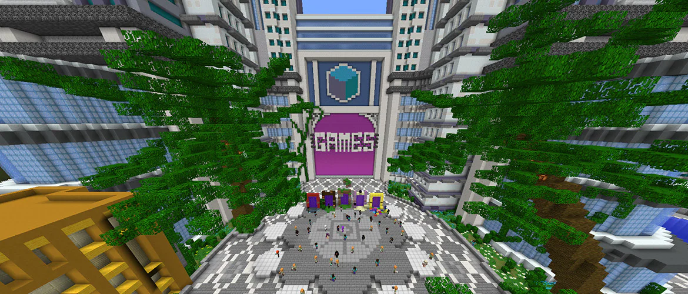
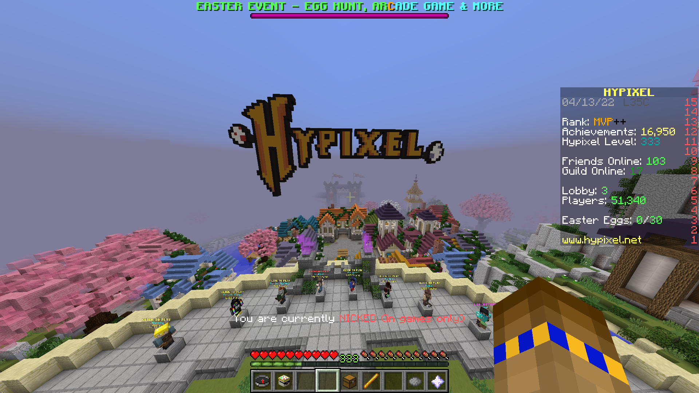
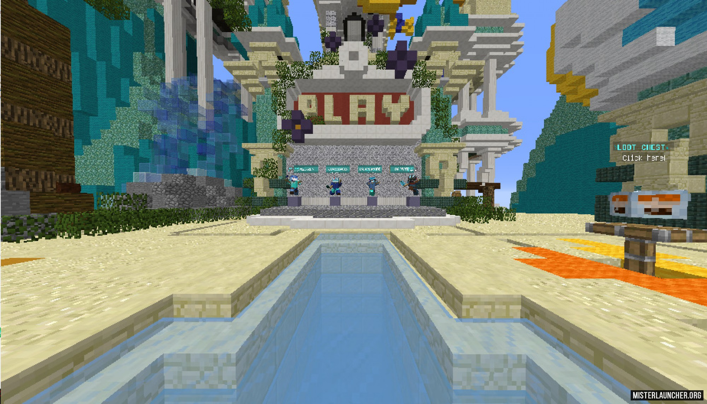

Хорошый сервер, есть и для minecraft bedrock, из режимов тут есть skyblock, creativ, survival, lackyblocks, skywars, tntrun, parkour, towers, eggwars, pvp, mob battle.
Разрабатывается совместно с microsoft и mojang.
Но для того чтобы зайти на этот сервер, нужна лицензия которая стоит не дешево.
Это тоже сервер для которого нужна лицензия, тут есть режими bedwars, skywars, murder mystery, arcade games, uhc champions, arena brawl, build battle, cops and crims, duels, mega walls, paintball warfare, quakecraft, blitz survival games, smash heroes, the tnt games, turbo kart racers, vampireZ, the walls, Warlords, skyblock.
Это сервер непростой, для того чтобы зайти надо скачать програму на официальном сайте https://streamcraft.net.
Из серверов тут есть sandbox, oneblock, z.o.n.a, sorcerymagic, magicrpg, hitechclasic, oceanblock, pixelmon, techomagicsky, techomagic, rpg, magic, galactic, nanorpg, nanotech, techomagicrpg, и каждый из них уникален.
Это обычный пиратский майнкрафт сервер, но тут все что нужно для удовольствия.
Есть creativ, survival, skyblock, skypvp, factions, prison, the pit, assassins, anarchy, kitpvp, gta, gamunity, build, bedwars, skywars, mlgrush, buildffa, practice, hide and seek, speed builders, build battle, the bridge, parkour, fast builders.
Это сервер где есть режими которых нет на сервере hypixel network и он пиратский.
Есть anarchy, gta, survival, skywars, bedwars, kitpvp, cs:go, blockparty, murder mystery, amongus, towers, squidgame, arcade games, skypvp, mso, skyblock, stalker, buildbattle, zombies.